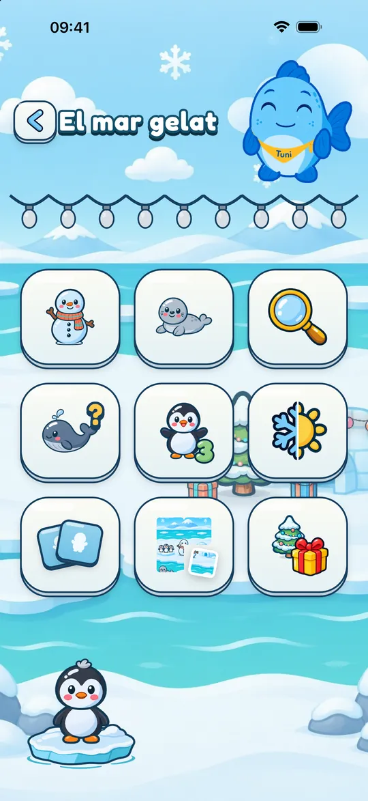
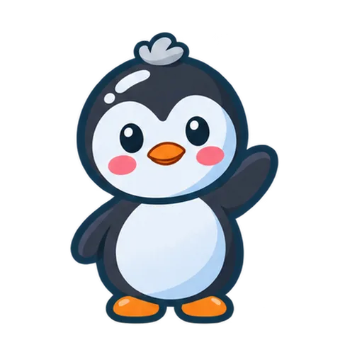

Temporada d’hivern · de 2 a 6 anys
El mar gelat, la temporada d’hivern
Des de l’1 de desembre, el menú de Mundo Tuni estrena «El mar gelat»: neu, gel i en Nevi, un pingüí amic d’en Tuni. És gratuït per a tothom.

Set o vuit jocs de neu
De l’1 de desembre al 15 de gener, el menú estrena «El mar gelat»: set o vuit jocs de neu segons l’edat. Són aquests:
- Conèixer coses de l’hivern: el floc de neu, el ninot de neu, el gorro, la bufanda, el pingüí…
- Trobar-les entre d’altres («On és?»)
- Endevinalles sobre el mar gelat
- Comptar pingüins, un a un
- Parelles del fred
- Un trencaclosques del mar gelat
- «Fred o calor?», a partir dels 3 anys: separar el que és per al fred del que és per a la calor
Cada adhesiu d’hivern es guanya completant «Coneix» i trobant aquella cosa a «On és?».

En Nevi, un pingüí amic d’en Tuni
En Nevi viu al mar gelat i parla en castellà, en català i en anglès, com en Tuni.
De l’1 de desembre al 6 de gener hi ha, a més, llums i un joc per obrir regals.

Per als adults
En mode automàtic, la temporada s’encén sola segons la data del dispositiu, i cada desembre torna a encendre’s. Fora d’aquestes dates la neu desapareix, sense avisos ni compte enrere, i els adhesius que s’hagin guanyat es queden a l’àlbum.
A la zona per a adults, la temporada té tres opcions («Automàtica», «Sempre» i «Mai»), i es pot apagar tota la temporada o només els llums i els regals.
Preguntes ràpides
- Quan hi és, el mar gelat?
- De l’1 de desembre al 15 de gener. En mode automàtic s’encén sola segons la data del dispositiu.
- És gratuït?
- Sí, el mar gelat és gratuït del tot. La resta de Mundo Tuni es pot provar de franc.
- Per a quines edats és?
- Per a nens de 2 a 6 anys. Els jocs canvien segons la franja d’edat que tria un adult; «Fred o calor?» comença als 3 anys.
Entra al mar gelat amb en Tuni
Descarrega Mundo Tuni per a la criatura i jugueu amb en Tuni i en Nevi. Es pot provar de franc.